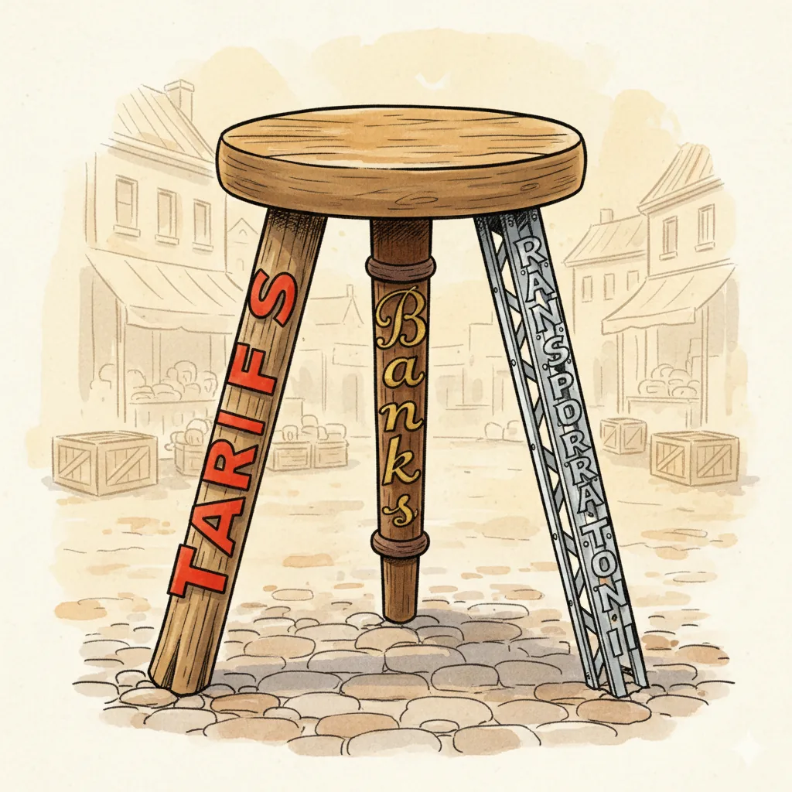
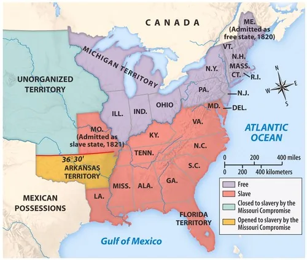

Whigs and Democrats
Chapter 11
Lecture 1: Post-War of 1812 Political Events
National Republicans
- By the end of the War of 1812, the Federalist Party was no longer a significant force in American Politics
- Era of Good Feelings (one-party dominance)
- Irony: Republicans adopt Federalist policies after Federalists disappear
Henry Clay's American System (1816)
Three interconnected policies to build American economic power.
1) Protective Tariff
2) Second Bank of the United States
3) Federal Internal Improvements
Click ⓘ to open each policy.
How the Three Parts Work Together

How the System Reinforces Itself:
The Tariff protects American factories from foreign competition.
Those factories, in turn, depend on a stable Bank to finance production and investment.
Both industry and finance require Internal Improvements—roads, canals, and ports— to move goods efficiently and connect markets.
Internal Improvements: The Nationalist Dream Fails
The Constitutional Problem:
The Sectional Problem:
Click ⓘ to open each problem.
John Marshall Reshapes American Government
John Marshall, Chief Justice (1801–1835)
- Serves 34 years—spanning the Jefferson through Jackson administrations
- Appointed by John Adams (Federalist), outlasts his party

John Marshall Reshapes American Government
Marshall's Project: Building Federal Power
Before Marshall → Weak federal government, strong states
After Marshall → Strong federal government, national economy
How? Three landmark cases:
- Can Congress create a national bank?
- Can states break contracts?
- Who controls interstate trade?
Watch for the pattern: Marshall consistently chooses federal power over state power
McCulloch v. Maryland (1819)
The Case:
- State of Maryland levies tax on Baltimore branch of the Bank of the United States
- Maryland's goal: Tax the Bank out of existence
Two Questions:
- 1. Does Congress have the right to charter a bank?
- 2. Can states tax federal agencies?
Dartmouth College v. Woodward (1819)
The Case:
- New Hampshire tries to take over Dartmouth College
- Wants to convert private college into state university
Marshall's Decision:
- Original charter is a protected contract
- States cannot violate or break private contracts
- Even if "public good" might be served
Gibbons v. Ogden (1824): Who Controls Trade?
The Conflict:
- Aaron Ogden: Operates steamboats with New York state monopoly license
- Thomas Gibbons: Operates steamboats with federal license
- Both run steamboats in same waters (Hudson River/NY harbor)
- Question: Whose license wins—state or federal?
Steamboat on the Mississippi River (c. 1824)
Gibbons v. Ogden (1824): Who Controls Trade?
Why It Matters:
- If states control trade → 13+ different trade rules, barriers between states
- If federal government controls trade → unified national market
Marshall Court: Winners and Losers
Who Benefits?
Federal government (more power)
Businesses and corporations (protected contracts, free trade)
Nationalists (unified country, strong center)
Who Loses?
State governments (less autonomy)
States' rights advocates (especially in South)
Those who fear concentrated power
The Argument over Missouri
The Request:
- Missouri applies for statehood (first state from the Louisiana Purchase)
- Would enter as a slave state
The Challenge:
- Rep. James Tallmadge Jr. (NY) proposes amendments:
- Ban on importing enslaved people into Missouri
- Gradual emancipation for those born after statehood (freedom at age 25)
- Result: Would make Missouri a free state
Missouri: It's About Power, Not Morality
Why This Debate Mattered: POLITICAL POWER
The Three-Fifths Compromise gives South extra representation:
- Three-fifths of a state’s enslaved population is added to its population count for apportioning House seats and electoral votes
- In 1790: South holds 47% of House seats with only 40% of white population
- North fears this advantage grows with each new slave state
The Sectional Balance:
- North dominates House (more total population)
- South controls Senate (equal state representation: 11 free, 11 slave states)
- Each new state tips the balance
The Missouri Compromise (1820)
The Deal:
- Missouri admitted as slave state
- Maine separated from Massachusetts, admitted as free state
Maintains Senate balance: 12 free states, 12 slave states
- Slavery banned in Louisiana Purchase territory above 36°30' latitude
Drew a line across the western territories
The Reaction:
- Temporarily resolves the crisis
- But exposes deep rift between North and South
- Thomas Jefferson: "a fire bell in the night"—warning of disaster ahead
The Missouri Compromise Line (36°30')

Missouri Compromise (1820) – Expansion of slavery and sectional balance
The Panic of 1819: America's First Depression
First nationwide economic depression in U.S. history
The Perfect Storm (Three Causes):
- Less demand for American grain
- Crop prices collapse
- Everyone borrows to buy land
- Speculation creates inflation bubble
The Panic of 1819: Human Cost and Political Fallout
The Bank's "Solution":
- Langdon Cheves (president of Second Bank) demands immediate repayment
- Forces state banks to pay in specie (gold/silver coins, not paper)
- Result: Saves the Bank BUT destroys local economies
The Human Toll:
- Philadelphia: 75% unemployed
- Tent cities spring up in Baltimore and other cities
- Farms foreclosed, sold for pennies on the dollar
- Families lose everything overnight
The Panic of 1819: Political Consequences
Political Consequences:
- Public rage turns toward the Second Bank
- Nicknamed "The Monster"
- "The Bank was saved—and the people were ruined"
- Plants seeds of Jackson's Bank War (1830s)